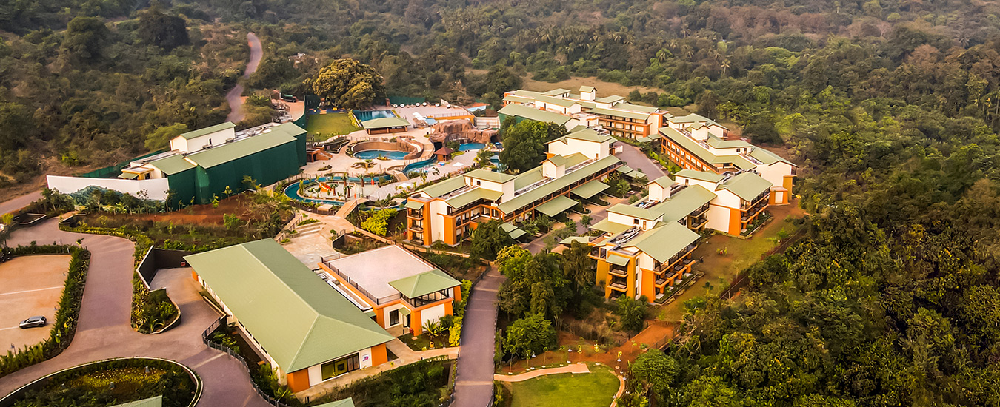

Club Mahindra Asonara, Goa
Bardez, Goa
Head to the quaint village of Assonora, in North Goa. It lies within the sub-district of Bardez, and is home to one of the loveliest kid-friendly resorts. Here, family holidays come alive under the sunshine and floral diversity. Needless to say, Club Mahindra Assonora, Goa should be your next travel spot.
Treating your loved ones to a blissful family vacation? Head to one of the most fun holiday destinations in India – summery Goa! Our Assonora Resort curates only memorable days for you. From awakening to the noises of morning birds chirping to afternoon thali lunches to evening laser displays, the itinerary only gets brighter!
|
|
|
|
Witness the beauty and welcome the wonder with Assonora Resorts. Club Mahindra has crafted culture-rich experiences for the whole family. Learn the secrets of Goan cooking with our master chefs, soak in the glamour of Goan themed nights, explore the golden shores of the beaches – make each day count.
Gym Pool
Cooking with Chef
Luxury must equal comfort, or else it is not luxury at all. Club Mahindra Assonora, Goa weaves comfortable luxury into its well-appointed amenities and services. Families get to spend their time in spacious rooms, elegant restaurants, a fabulous pool and spa, by way of a lush lawn